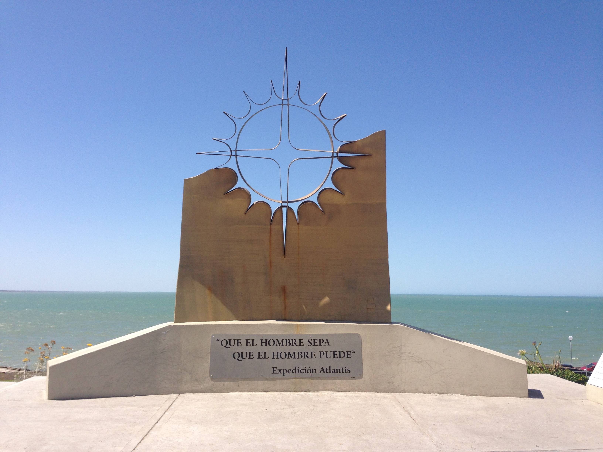

Historia
una balsa que en 1947 cruzó el Océano Pacífico, liderada por el noruego Thor Heyerdahl demostrando que los americanos pudieron haber llevado su influencia a la Polinesia, el abogado argentino Alfredo Barragán, natural de Dolores (provincia de Buenos Aires) estudió el tema y observó que había un tipo de balsas hechas con un número impar de troncos de madera muy liviana, unidos con cuerdas vegetales, que navegaban en Australia, en la costa occidental de América, y en África. Eso unido a sus lecturas sobre las cabezas colosales olmecas, unas esculturas de 20 toneladas y de casi 3 metros de altura hechas por la cultura olmeca le hicieron madurar la idea de demostrar la posibilidad de que navegantes africanos pudieron haber llegado a América.
Para mas informacion sobre el tema puedes darle click aqui

